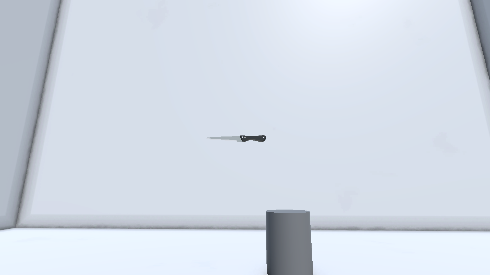
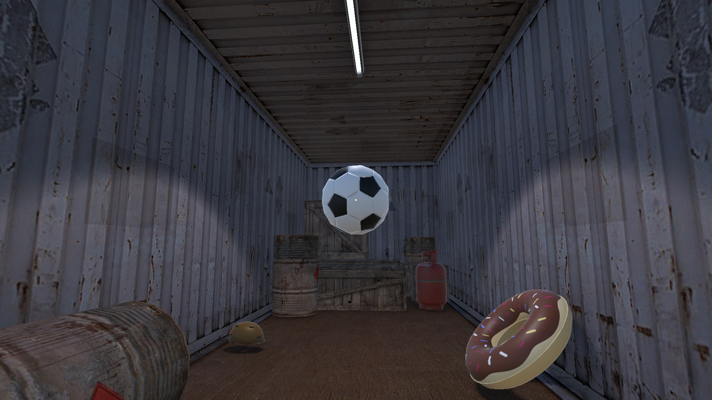
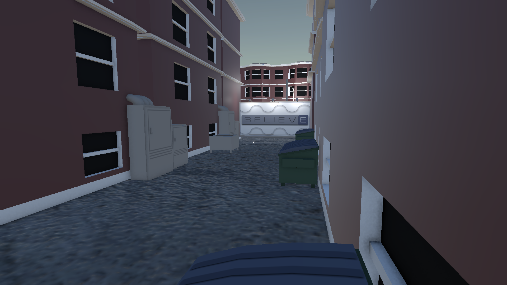
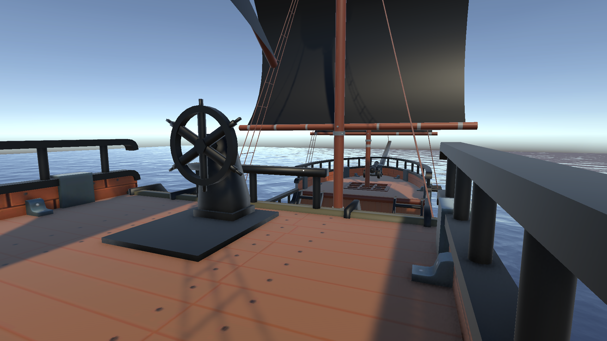

Media




About the project
A silly game based around the given theme of "The afterlife". You take the role as the grim reaper's unpaid intern and given the task of taking control of the "soon-to-be-deceased", finding goofy and strange ways to end their lives in each level.
Each level presents unique challenges and humorous scenarios as you navigate the levels as the grim reaper's intern.
"Project Afterlife" or later presented as "The graveyard shift" uses Unity 6's physics engine and 3D enviroments to create a zany experience.
This game includes some light dark humour and is intended as an experimental project to explore Unity 6's capabilities.
A game created with Heather Brander for the 48 hour UWS GameJam of 2026.
- Interactible environments
- Object velocity detection
- Player movement, controls and pick up mechanics
What I learned
How Unity 6's physics engine can be used to detect and respond to object movement.
Working effectively within a team to achieve common goals and overcome challenges.
Planning and executing a game development project within a tight deadline.